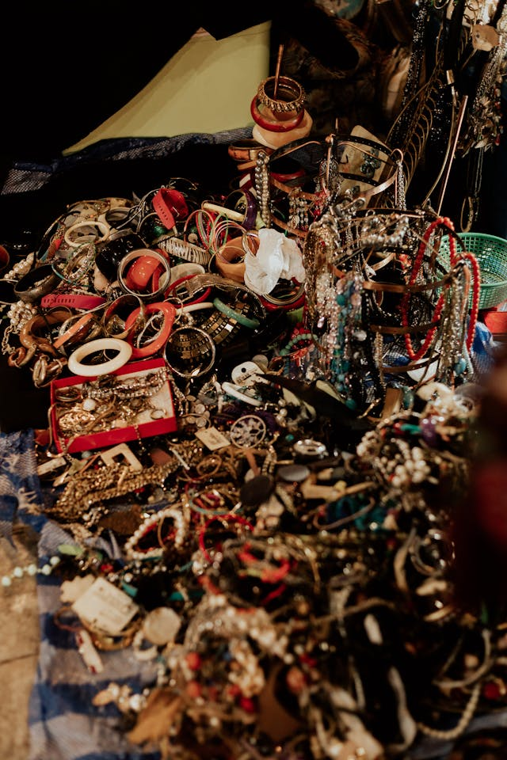

There is a bed and and a well, so you have water! You can tell someone lived here, long ago. You see grape vines on the window in the back and berries in the ground. This must have been a lovely cottage way back when. This will make a suitable place for a good nights rest before making the journey back to civilization in the morning. You look around the humble building, you noticed something reflecting the moonlight. You get a closer look on the table and see gold, lots of it. It's abandoned treasure! What good luck. Congratulations!!
